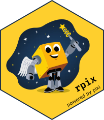

rpix is currently in alpha. We don’t expect to support the entire pixi CLI, but are open to implement useful features - feedback is welcome!
Overview
The rpix package provides an interface to manage dependencies with pixi.
Installation
rpix depends on having pixi installed - so if you haven’t got it yet, install pixi first.
- Project template. For a fully-fledged, ready-to-use R project, create a project with the r-template
- Add to existing project. To add rpix to an existing pixi project:
pixi add r-rpix(THIS DOES NOT YET WORK, SEE ISSUE)
install.packages('devtools')
devtools::install_github('roaldarbol/rpix')Resources
How to use rpix
library(rpix)The primary use of rpix is the ability to add dependencies in the console like you normally would with install.packages or renv::install. With rpix, the command is add. Let’s try installing the tidyverse:
rpix::add("tidyverse")Fun fact: rpix is a inspired by the Danish word harpiks which means resin. I see it as the resin that binds pixi into the natural R workflow.